Tracefolio REPORTS & ISSUES
Tracefolio REPORTS & ISSUESCA0.0.100 — 실제 블록 선택 차이 수정·재검증
기존 기록 이전CA0.0.100 — 실제 블록 선택 차이 수정·재검증 — 당시 작업 내용과 검증 범위를 원문 기준으로 정리한 보관 기록입니다.
보관 기록입니다. 아래 결과는 원문 작성 시점의 내용이며, 이번 편집에서 제품 테스트를 다시 실행하지 않았습니다.
VA·CA 실제 대조 — 현재0.0.99 / 탐색0.0.98
CA0.0.100 — 실제 블록 선택 차이 수정·재검증
갱신 2026-10-23T10:46:47.864752+09:00
현재 검사 프로필 설치는0.0.100입니다. 목표는 계속 진행 중입니다. 이번 결과는 같은 C++클래스에서 Alt+]·Alt+[를 실제 입력한 두 대표 시나리오이며 전체 제품 동기화율이 아닙니다.
확인된 수정 결과
수정 전CA0.0.99는 클래스 이름 안에서 블록 확장을 하면 파일 전체를 선택했습니다. VA는 클래스 선언과 본문 끝 줄바꿈까지 선택했습니다. 타입 선언 헤더·본문을 함께 인식하도록 수정한 후 같은 입력으로 대조했습니다.
| 실제 키 | VA | CA0.0.100 | 판정 |
|---|---|---|---|
| Alt+] | 1행1열→8행1열, 클래스 선언과 줄바꿈 | 동일 문자열·양끝 위치 | 일치 |
| Alt+[ | 1행7열, 선택 없음 | 동일 문자열·양끝 위치 | 일치 |
2/2개·100% 일치. 사전 상태는 양쪽 모두1행7열, 빈 선택임을 읽기 전용 DTE관찰로 확인했습니다. 파일 SHA256도 양쪽 동일합니다. 첫 VA시도는 시작 위치가 달라 비교에서 제외하고 재시도 증거만 사용했습니다.
원본과 수정 후 실제 화면
VA: 실제 블록 확장
[ 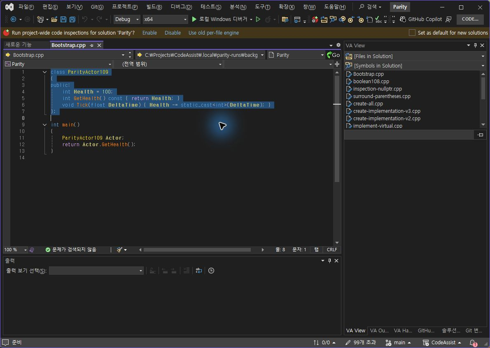
CA0.0.100: 실제 블록 확장
[ 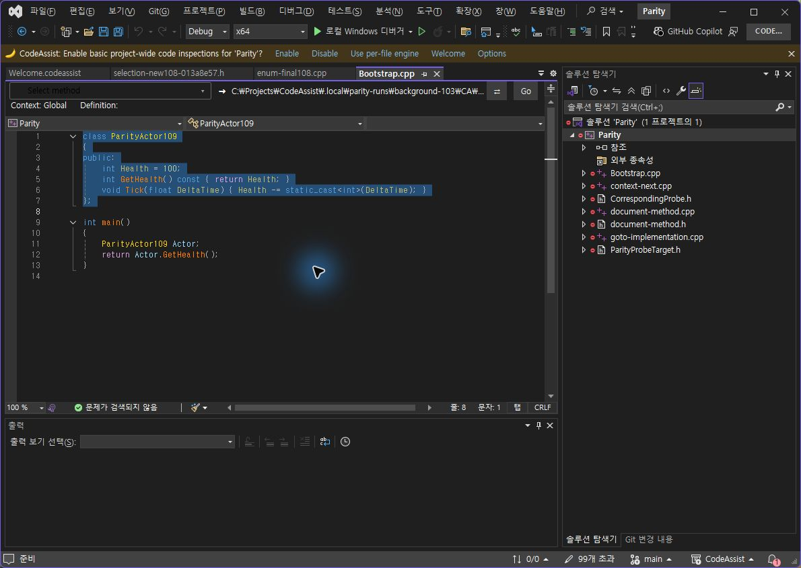
수정 전 차이
VA: 클래스만 선택
[
CA0.0.99: 파일 전체 선택 — 불일치
[ 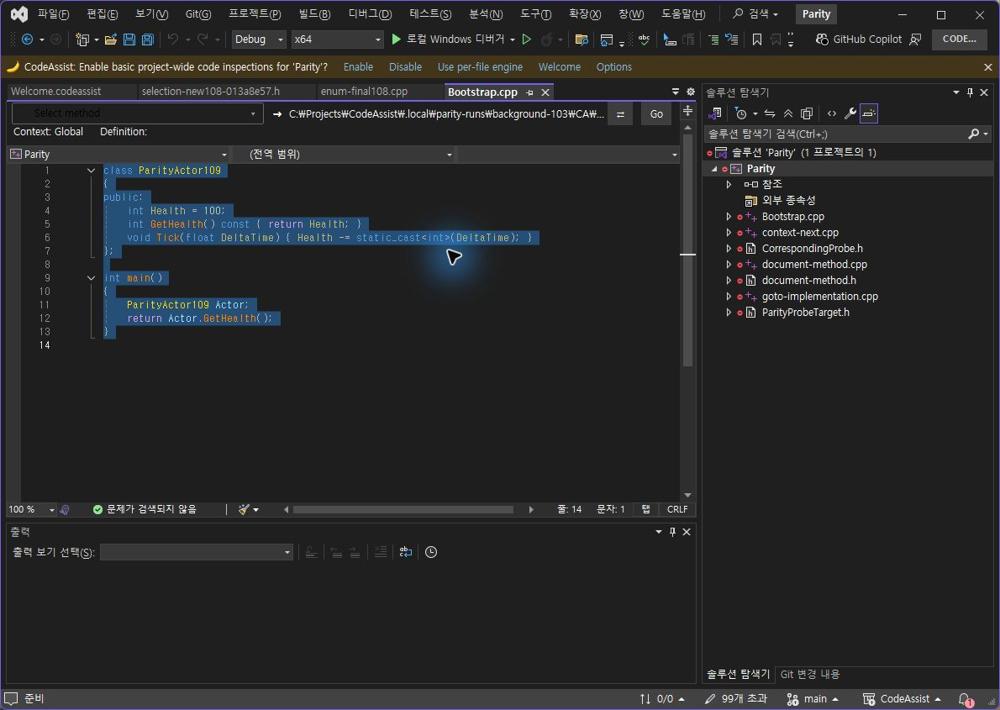
검증 범위와 남은 작업
VS2019·Modern 빌드 통과, 실제 검사 프로필 설치 바이너리6/6개 일치.
회귀292/292개 통과. 신규4개는 선언 경계·중첩 블록·문자열 오인 방지·축소 복원을 검사합니다.
캠페인 대표 실제 키 대조는5/22조합·22.73%입니다. 이전 버전의 Alt+M·비블록 선택 근거를 포함하며 모든 키가 현재 버전에서 재검증됐다는 뜻이 아닙니다.
문서 기반 부분 명세108/108개·100%. 전체 역분석 완료나 전체 기능 동등성 인증과 구분합니다.
다른 블록·여러 언어·설정 조합, 나머지 단축키, UI색상·누락 옵션이 남아 있습니다. 전체 목표는 미완료입니다.
정확한 전후 문자열·판정 · 현재 설치 확인 · 회귀 테스트 · 설치 패키지 검증
제안 시간10분. 실제 이번 묶음 9.0분, 기록 시각2026-10-23T10:46:47.864752+09:00. 사용 — CppSelection 후보를 검색하고 현재 소스·실제 입력 결과로 확인
이전 회차 기록·108개 전체 기준표 펼치기
이전 차단 기록 — 현재 해제됨
2026-10-23T01:45:27.599723+09:00 확인: Windows 보안 창(PickerHost PID29376)이 세 차례 연속 점검에서 남아 있습니다. 검사 프로세스 두 개는 실행 중입니다. 보안 창을 사용자가 직접 처리한 뒤 재개 요청을 주시면 실제 UI·키 검증을 이어갑니다. 전체 완료가 아닙니다.
입력 검증 재개 — 선택 확장·축소 실제 대조
갱신 2026-10-23T10:37:06.795389+09:00
사용자가 보안 창을 처리하고 최소화된 검사 창을 복원했습니다. 현재 목표는 active입니다. 아래 과거 차단 기록은 이력이며 현재 차단 상태가 아닙니다.
결과: 두 대표 시나리오2/2개·100% 일치
VA검사 프로필의 키가 기본 VS명령에 잡혀 있음을 설정 화면에서 확인했습니다. CodeAssistBackgroundVA의 텍스트 편집기 범위에 VA확장·축소 명령을 배정하고 읽기 전용 API로 등록을 확인했습니다. 일반VS프로필은 변경하지 않았습니다.
동일한 C++파일1행7열에서 실제 키를 입력했습니다. 화면의 확대/축소100% 텍스트를 선택 문자열로 사용하지 않고, 읽기 전용 DTE관찰로 실제 문자열·양끝 위치를 확인했습니다.
| 키 | VA 결과 | CA0.0.99 결과 | 판정 |
|---|---|---|---|
| Alt+Shift+] | ParityActor109 선택: 1행7열→1행21열 | ParityActor109 선택: 1행7열→1행21열 | 일치 |
| Alt+Shift+[ | 선택 없음: 1행7열→1행7열 | 선택 없음: 1행7열→1행7열 | 일치 |
한 식별자의 두 시나리오 일치입니다. SmartSelect의 전체 경계 조건이나108개 전체 기능 완료로 계산하지 않습니다. 이전 Alt+M을 포함한 캠페인 대표 키 관찰은3/22조합·13.64%이며, Alt+M은 이전 버전 실행 근거입니다.
확장 실제 화면
VA: 배정 정렬 후 실제 확장
[ 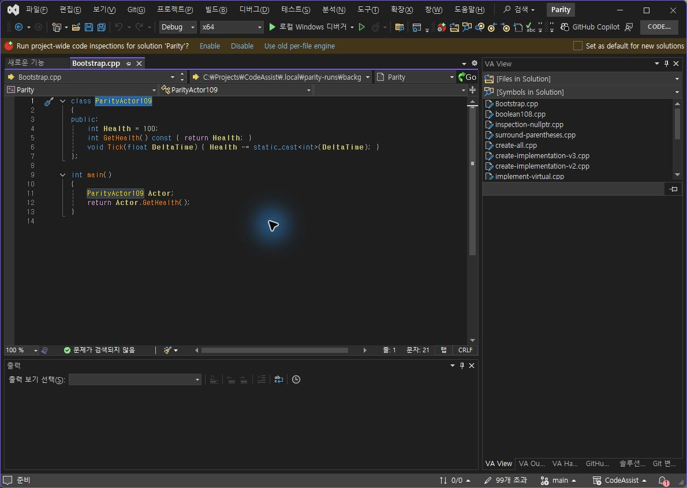
CA0.0.99: 실제 확장
[ 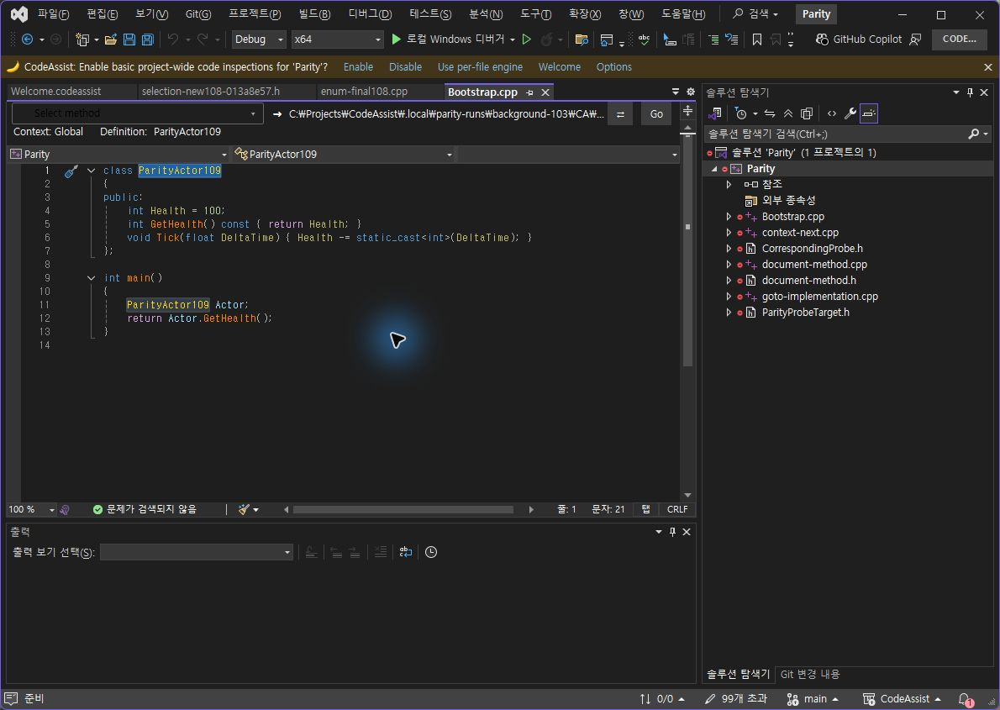
축소 실제 화면
VA: 실제 축소
[ 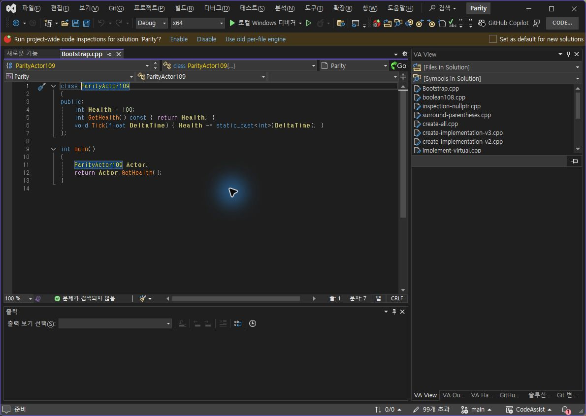
CA0.0.99: 실제 축소
[ 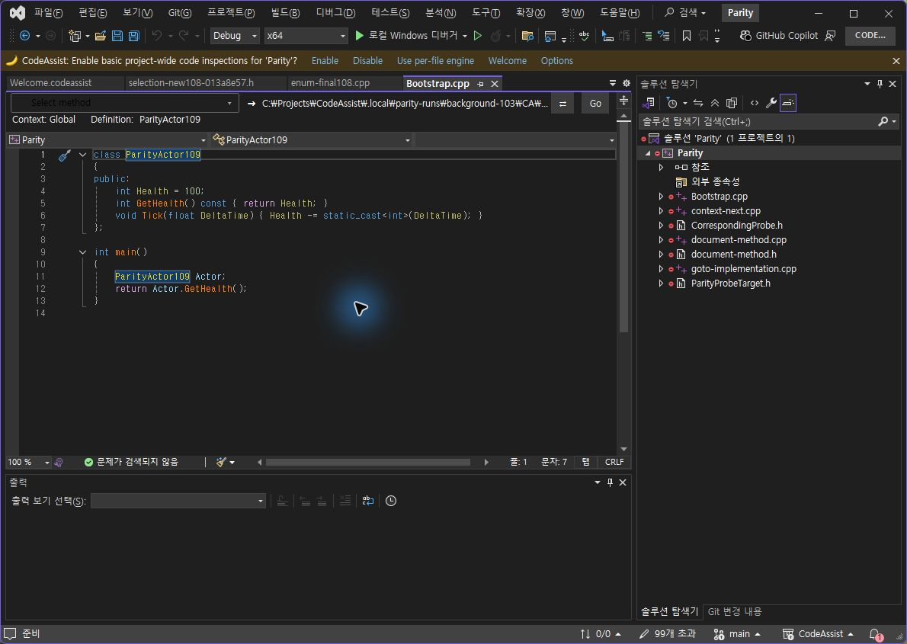
판정과 범위 · VA확인된 키 배정 · VA확장 문자열 · CA확장 문자열 · VA축소 문자열 · CA축소 문자열
검사 프로필의 두 키는 다음 반복 검사에 사용하도록 유지했습니다. 목표는 계속 진행 중이며, 다음에는 블록 선택과 다른 실제 키 동작을 검사합니다. XERJ검색 사용 후 현재 소스로 확인했습니다.
제안 시간: 첫 결과10분 이내. 최초 확인된 결과는 키 충돌 확인이며, 배정 정렬 후 두 시나리오 확인까지 수행했습니다. 이번 재개 시작2026-10-23 10:21:30 KST, 기록 시각2026-10-23T10:37:06.795389+09:00. 전체 목표는 미완료입니다.
아래는 과거 진행 기록입니다
검사기 명령 탐색 추가 검증
갱신 2026-10-23T01:44:44.811379+09:00
Windows 보안 창 PID29376이 계속 남아 있어 입력 검사는 대기 중입니다. 검사기 보완·조회 검증을 제품 기능 일치로 계산하지 않았습니다.
읽기 전용으로 실제 VA에 네 명령 이름을 조회한 결과 **4/4개·100%**가 확인됐습니다. 이는 이름 조회 성공률입니다. 제품 기능 동기화율이 아닙니다.
| 조회한 기존 이름 | 실제 반환 이름 |
|---|---|
| VAssistX.SmartSelectExtend | VisualAssist.SmartSelectExtend |
| VAssistX.SmartSelectShrink | VisualAssist.SmartSelectShrink |
| VAssistX.SmartSelectExtendBlock | VisualAssist.SmartSelectExtendBlock |
| VAssistX.SmartSelectShrinkBlock | VisualAssist.SmartSelectShrinkBlock |
DTE 자체가 기존 이름의 조회를 새 이름으로 반환하므로 기존 이름으로 실행하면 항상 실패한다고 단정할 수 없습니다. 확인된 문제는 기존 접두어만 수집하던 명령 목록의 누락입니다.
실제 등록 조회 경로 검증7/7개 통과.
BackgroundVerifier111 및 ParityRunner 빌드 성공.
검사기 후보는 실제 명령 실행·프로필 배포 검증 전입니다.
제품 기능 추가 통과0개. 기존 물리 키 판정과 전체 미검증 범위를 그대로 유지합니다.
이번 결과 · VA실제 읽기 전용 조회 · 등록 조회 검증 · 백그라운드 검사기 빌드
상태 점검 제안1분 이내. 이번 재개2026-10-23 01:40:51 KST. 보안 창 확인 후 독립적인 검사기 보완을 진행했습니다. 전체 목표는 미완료이며 사용자 보안 창 처리 후 입력 검증을 재개합니다.
실제 선택 단축키 대조·검사기 보완
갱신 2026-10-23T01:40:11.339275+09:00
전체 목표는 진행 중입니다. 새 Windows 보안 창(PID29376)이 입력을 차단하여 사용자 직접 처리를 요청했습니다. 원인 미확정 차이를 제품 실패나 통과로 계산하지 않습니다.
같은 입력에서 관찰한 차이
같은 파일의1행7열에서 Alt+Shift+]를 입력했습니다. VA는 클래스 선언 전체, CA0.0.99는 클래스 이름을 선택했습니다. 화면뿐 아니라 읽기 전용 DTE 관찰기로 실제 선택 문자열·양끝 위치를 확인했습니다. 관찰기는 입력·편집·명령 실행·화면 활성화를 하지 않습니다.
VA: 클래스 선언 전체 선택
[ 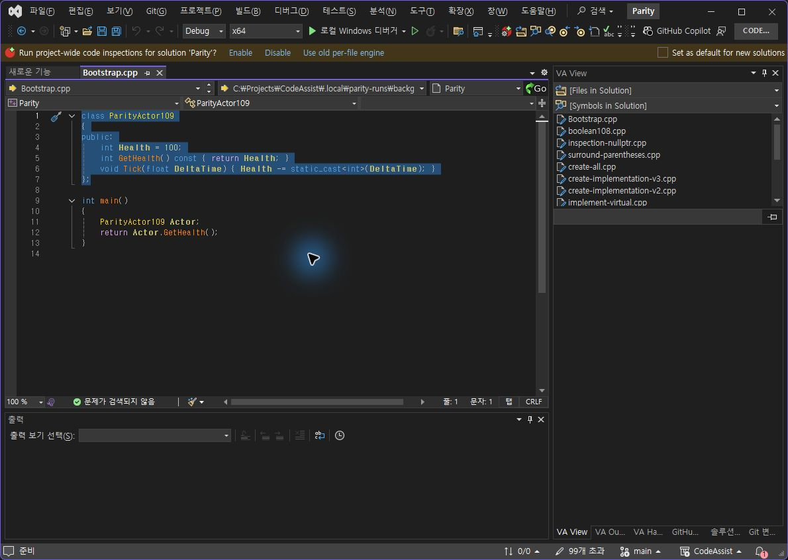
CA0.0.99: 클래스 이름 선택
[ 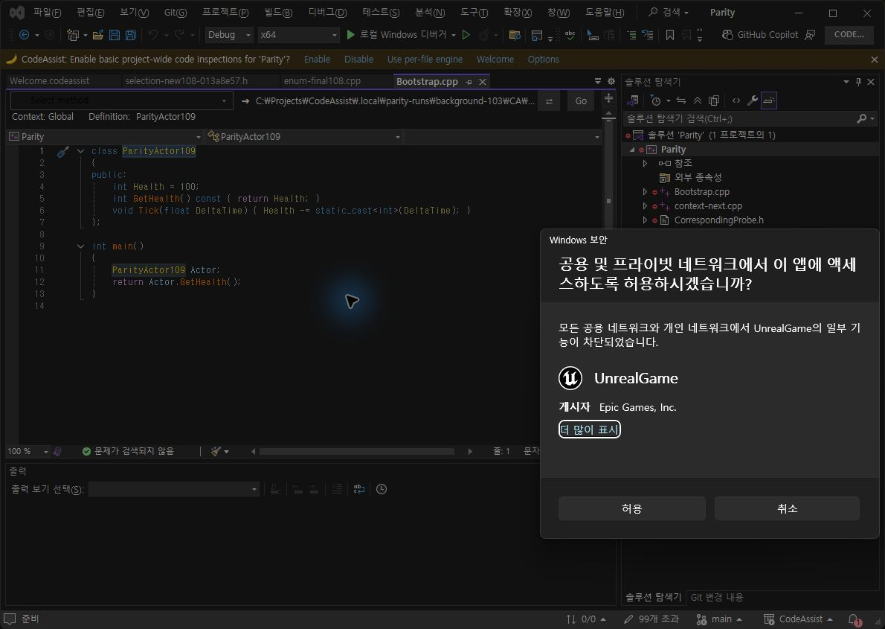
다만 VA의 실제 명령 등록을 읽으니 비블록 확장·축소에는 키 배정이 없고 블록 확장·축소에만 Alt+] / Alt+[가 있었습니다. CA에는 네 조합이 배정되어 있습니다. 따라서 동일 명령이 실행됐다고 볼 수 없어 기능 판정은 보류합니다. 등록이 없는 키가 어떤 경로로 블록 선택에 도달했는지는 아직 확정하지 않았습니다.
| 원본 명령 | 실제 VA 배정 |
|---|---|
| VisualAssist.SmartSelectExtend | 배정 없음 |
| VisualAssist.SmartSelectShrink | 배정 없음 |
| VisualAssist.SmartSelectExtendBlock | 텍스트 편집기::Alt+] |
| VisualAssist.SmartSelectShrinkBlock | 텍스트 편집기::Alt+[ |
공식 문서상 기본 조합은 VA Keyboard Shortcuts와 대조했습니다. 문서 기본값과 현재 검사 프로필의 배정값을 구분합니다.
자동 검사기 수정
실제 설치 명령 이름은 VisualAssist.*입니다. 기존 검사기는 VAssistX.*를 기준으로 탐색하여 새 이름을 누락할 수 있었습니다. 두 접두어만 같은 정확한 명령 이름으로 해석하도록 보완했습니다. 다른 확장의 유사 이름·누락·모호한 결과는 거절합니다.
명령 해석 회귀6/6 통과.
실제 저장된 VA명령4/4개의 이름 해석 통과.
검사기 빌드 성공. 새 검사기 명령을 VS에서 실행한 것으로 계산하지 않습니다.
BackgroundWorker의 목록 수집도 두 접두어를 인식합니다. 다른 레거시 직접 실행 경로는 추가 점검이 필요합니다.
이번 물리 키 양쪽 입력 시도는 이전 Alt+M을 포함해 **2/22개·9.09%**입니다. 이전 목록 열기 관찰만 일치1/22개·4.55%로 유지하며, 새 판정보류를 일치로 더하지 않습니다. 전체 제품 동기화율이 아닙니다.
이번 판정·원시 결과 · VA실제 선택·키 배정 · CA실제 선택·키 배정 · 실제 목록 이름 해석 · 검사기 빌드
제안 시간10~15분. 시작2026-10-23 01:27:39 KST. 이번 결과 기록2026-10-23T01:40:11.339275+09:00. 화면 실행 검증은 보안 창 처리 후 계속합니다. XERJ검색 사용, 오래된 검색 결과는 현재 소스로 보완했습니다.
현재 검사 설치: CA0.0.99 — 옵션 배치 수정·실행 확인
갱신 2026-10-23T01:26:51.255445+09:00
전체 목표는 진행 중입니다. 아래 원본과 수정 화면을 대조했습니다. 이후의0.0.98 탐색 기록은 해당 버전의 실행 증거로 보존했으며0.0.99의 새 통과로 계산하지 않습니다.
이번 결과
두 옵션 페이지에 한정한 구조 체크 9/14항목,64.29%. 모든 UI의 유사도가 아닙니다.
CA입력 검증·종속 항목·취소 동작 4/4개,100%. VA기능 일치율이 아닙니다.
현재 설치 바이너리6/6 일치, VS2019·Modern 빌드 통과, 회귀288/288통과.
원본VA프로세스21064는 옵션 종료 시점에 충돌 이벤트를 남겼습니다. 원인은 미확인입니다. 새 검사 프로세스52636으로 재시작했습니다.
저장된 환경 설정은 변경하지 않았습니다. 검사 입력값은 취소했습니다.
Editor — 원본과 현재 설치
VA 현재 Editor
[ 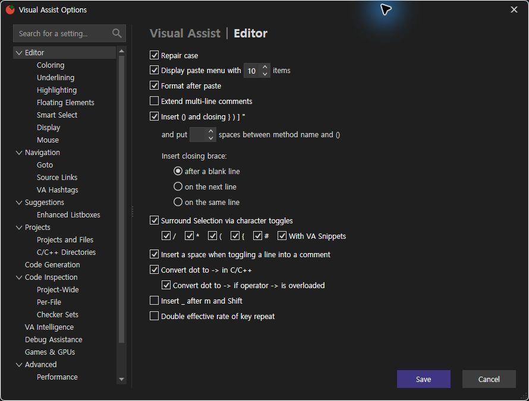
CA0.0.99 Editor: 유효 숫자10 복원 후
[ 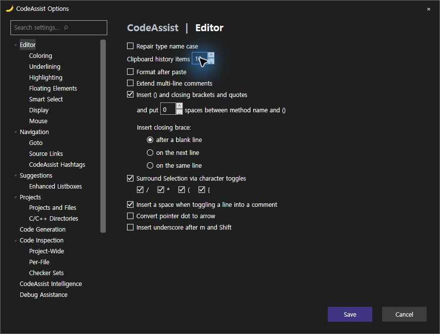
Suggestions — 원본과 현재 설치
VA 현재 Suggestions
[](../assets/imports/docs/validation/live-109/computer-use/request-127-2.jpg)
CA0.0.99 Suggestions: 지원 설정 그룹 재배치
[ 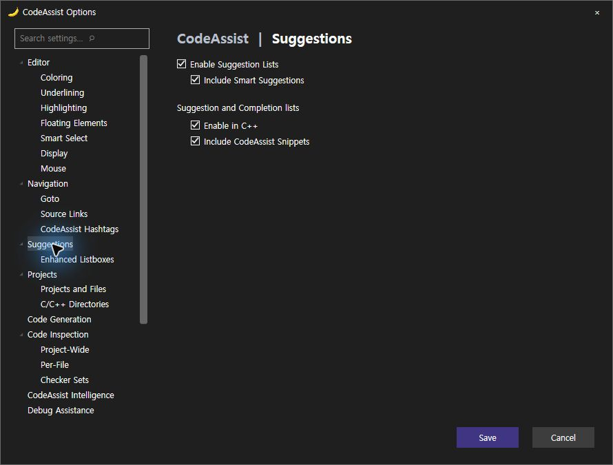
구조 체크: 각1점
누락 항목은 불일치로 계산했습니다. 같은 틀과 일부 설정 배치를 맞췄다는 의미이며, 모든 옵션 동등성으로 해석하지 않습니다.
| 구조 기준 | 판정 |
|---|---|
| 외곽 크기890×675 | 일치 |
| 왼쪽 검색·트리 / 오른쪽 본문 배치 | 일치 |
| 상단 섹션 제목 위치·활성 제목 강조 | 일치 |
| Editor 기본 체크박스 순서 | 일치 |
| 클립보드 수 같은 줄 증감 입력 | 일치 |
| 메서드 괄호 공백 같은 줄 증감 입력 | 일치 |
| 닫는 괄호3개 라디오 그룹·들여쓰기 | 일치 |
| Suggestions 추천 그룹과 C++완성 그룹 분리 | 일치 |
| 하단 오른쪽 저장·취소 배치 | 일치 |
| 붙여넣기 메뉴 활성화 체크박스 | 차이 / 미구현 |
| 둘러싸기 # / 스니펫 항목 | 차이 / 미구현 |
| 연산자 오버로드 변환 하위 옵션 | 차이 / 미구현 |
| 키 반복 속도 옵션 | 차이 / 미구현 |
| Suggestions 전체 항목·스니펫 편집 버튼 | 차이 / 미구현 |
실제 CA동작 검사
| 검사 | 결과 | 실행 증거 |
|---|---|---|
| 범위 밖 클립보드 수0 → Save 비활성 | 확인 | 관찰138 |
| 10으로 복원 → Save 활성 | 확인 | 관찰147 |
| 추천 목록 끄기 → Smart 하위 항목 비활성 | 확인 | 관찰149 |
| Escape 취소 → 옵션 닫힘 | 확인 | 관찰150 |
이번 구조·동작 원시 결과 · 실제 설치 확인 · 회귀 검사 · VA프로세스 충돌 이벤트
제안 시간10~15분. 시작2026-10-23 01:13:48 KST, 이번 기록 완료2026-10-23T01:26:51.255445+09:00. 전체 목표는 미완료입니다.
아래는 직전0.0.98 검사 기록입니다
VA·CA 실제 화면·탐색 대조 — CA0.0.98
갱신 2026-10-23T01:13:21.621784+09:00
지속 목표는 진행 중입니다. Computer Use 연결 복구와 검사 프로필 최신 설치를 확인했습니다. Windows 보안 창은 종료되어 검사를 재개했습니다. 전체108개 검증 완료를 뜻하지 않습니다.
현재 확인한 결과
메서드 목록 네 항목의 실제 도착 위치: 4/4, 100% 일치.
이 목록에 한정한 자체 UI 체크: 8/9, 88.89%. 글자색·선택 강조색 차이가 남아 있습니다. 전체 UI 유사도 점수가 아닙니다.
실제 키 입력 관찰: Alt+M 1/22, 4.55%. 나머지 키는 이번 실행에서 통과 처리하지 않았습니다.
설치 바이너리 6/6 일치. VS2019·Modern 빌드 통과. 실제 IDE 대조는 VS2022입니다.
회귀 테스트 288/288 통과. 이를 VA 기능 일치 점수에 합산하지 않습니다.
문서 기반 부분 명세 108/108, 100%. 전체 역분석 완료율이 아닙니다.
실제 선택 결과
동일한 C++ 파일 SHA256 8a9d8ad69a16fb6813230be6b2db5a5717d5deb55b426b092465777af2884188를 사용했습니다. 행·문자 위치는 선택 후 안정된 상태에서 다시 관찰했습니다. VA와 CA의 실제 실행 결과만 대조했습니다.
| 항목 | VA 행:문자 | CA0.0.98 행:문자 | 판정 | 실행 근거 |
|---|---|---|---|---|
| GetHealth | 5:15 | 5:15 | 일치 | VA · CA |
| Tick | 6:11 | 6:11 | 일치 | VA · CA |
| ParityActor109 | 1:21 | 1:21 | 일치 | VA · CA |
| main | 9:9 | 9:9 | 일치 | VA · CA |
이전 CA0.0.97의 클래스 선택은 2행2열이었고, VA의 실제 선택은1행21열이었습니다. 0.0.98에서 식별자 끝으로 수정하고 재검증했습니다.
실제 목록: 이름·아이콘과 남은 색상 차이
VA 원본: 기본 글자색·선택 글자색
[ 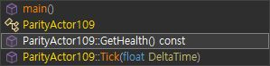
CA0.0.98: 심볼 색상은 표시되나 원본과 세부 차이
[ 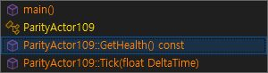
클래스 이동 수정 후
VA: 1행21열
[](../assets/imports/docs/validation/live-109/computer-use/request-100-1.jpg)
CA0.0.98: 1행21열
[ 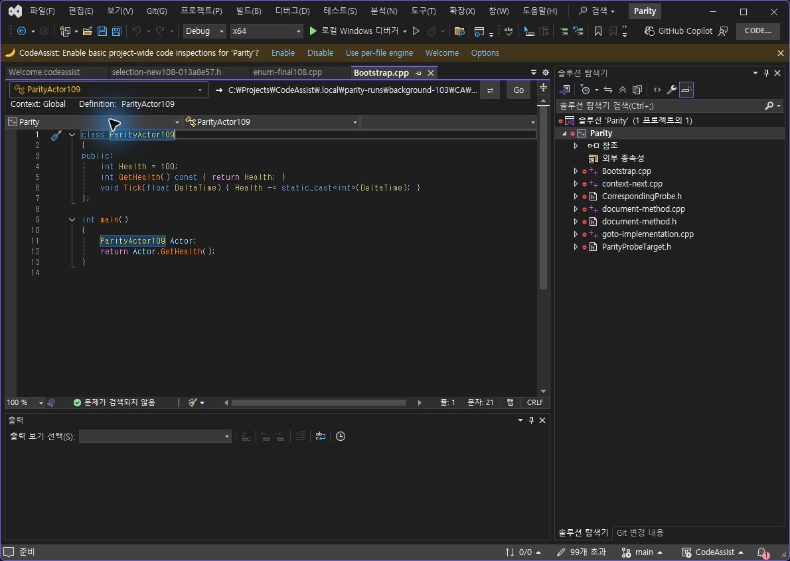
Tick 이동 대조
VA: 6행11열
[ 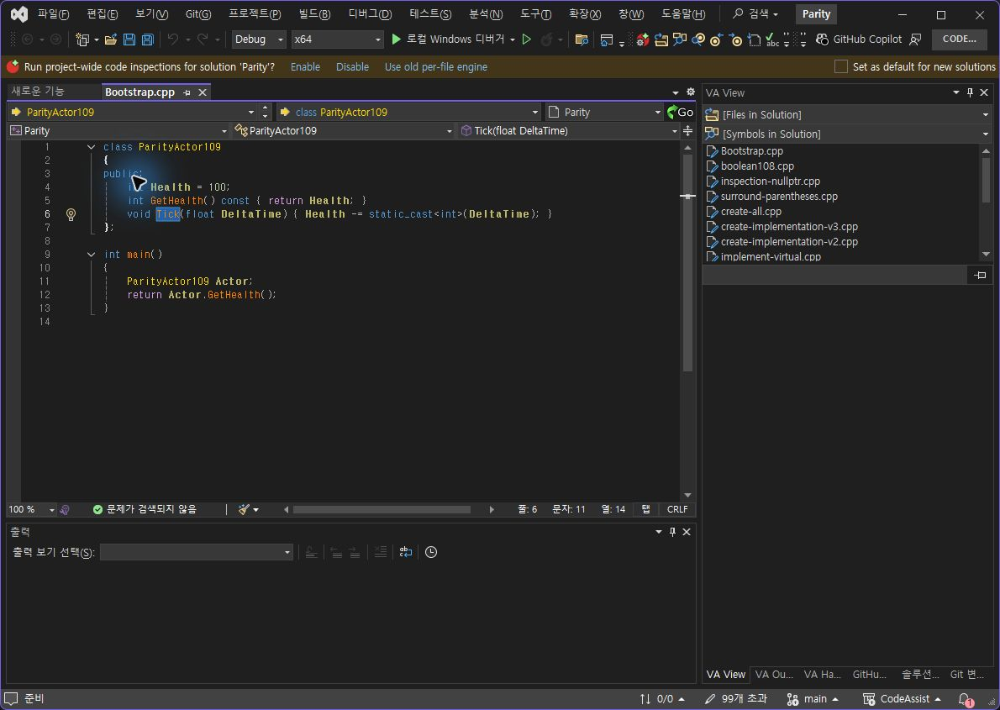
CA0.0.98: 6행11열
[ 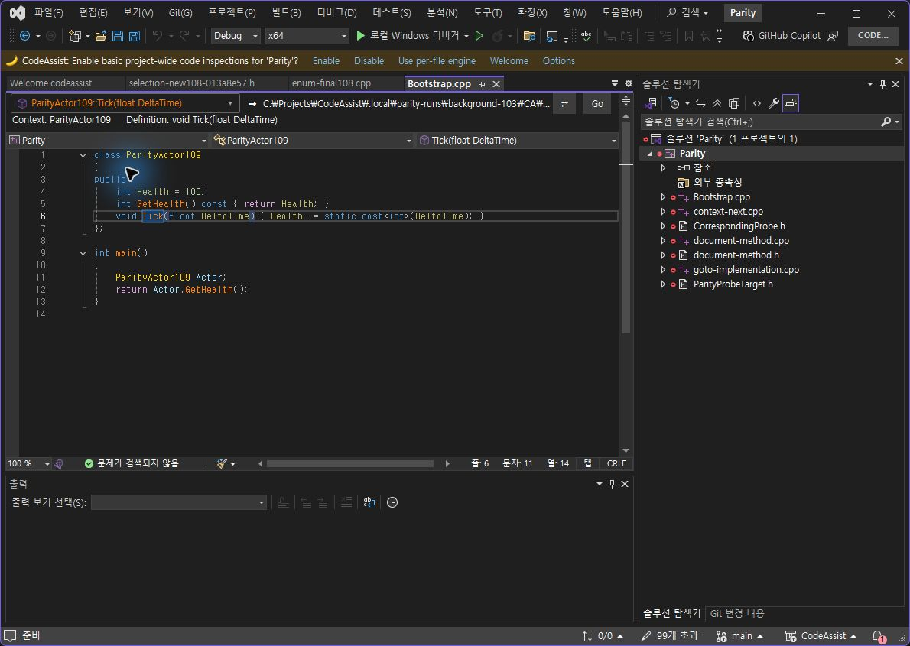
한정된 UI 판정표
각 항목 동일 가중치1점, 위치·크기 허용8px. 전체 제품 점수로 사용하지 않습니다.
| 항목 | 판정 |
|---|---|
| Alt+M으로 작은 목록 열기 | 일치 |
| 왼쪽 탐색 막대 앵커: 기존 촬영 차이 6×3px | 일치 |
| 너비: VA 299px / CA 300px | 일치 |
| 높이: VA 74px / CA 82px, 허용 8px | 일치 |
| 클래스 포함 4개 항목 | 일치 |
| 표시 이름·서명·순서 4/4 | 일치 |
| 클래스/함수 아이콘 종류 | 일치 |
| 기본 글자색·선택 강조색 | 차이 |
| 접근성 이름에 실제 표시 이름 노출 | 일치 |
아직 다른 Editor 옵션 구성
VA Editor
[](../assets/imports/docs/validation/live-109/computer-use/request-025-5.jpg)
CA0.0.95 관찰: 이후 옵션 소스 미수정, 최신 화면 재확인 필요
[](../assets/imports/docs/validation/live-109/computer-use/request-021-5.jpg)
아직 다른 Suggestions 옵션 구성
VA Suggestions
[ 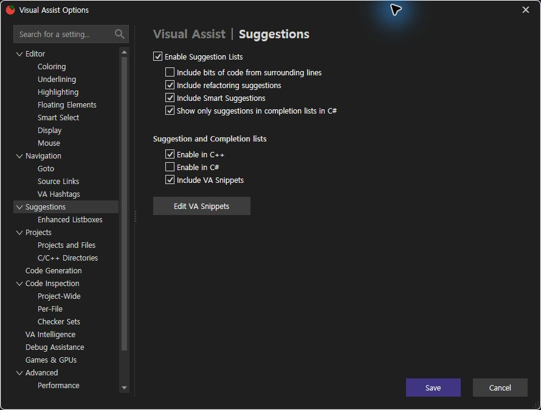
CA0.0.95 관찰: 이후 옵션 소스 미수정, 최신 화면 재확인 필요
[](../assets/imports/docs/validation/live-109/computer-use/request-023-5.jpg)
108개 전체 범위
현재 회차에서 모든 조건을 인증한 기능은 **0/108(0%)**입니다. 이는 미구현률이 아니라 전체 조건 검증 완료 개수입니다. 한 목록의4개 이동 일치를108개 전체 일치율로 바꾸지 않습니다. 과거17/108 기록도 현재 버전 점수로 재사용하지 않습니다.
| ID | 기능 | 현재 회차 |
|---|---|---|
| VA-F001 | Find by Context | 현재 회차 실행 미완료 |
| VA-F002 | Find References | 현재 회차 실행 미완료 |
| VA-F003 | Find Symbol in Solution | 현재 회차 실행 미완료 |
| VA-F004 | GoTo Implementation | 현재 회차 실행 미완료 |
| VA-F005 | GoTo Member | 현재 회차 실행 미완료 |
| VA-F006 | GoTo Related | 현재 회차 실행 미완료 |
| VA-F007 | Highlight Current Line | 현재 회차 실행 미완료 |
| VA-F008 | List Methods in File | 부분 실행: 목록4항목 실제 탐색 일치; 전체 경계·설정 조건 미검증 |
| VA-F009 | Move Scope | 현재 회차 실행 미완료 |
| VA-F010 | Navigate Back and Forward | 현재 회차 실행 미완료 |
| VA-F011 | Open Corresponding File | 현재 회차 실행 미완료 |
| VA-F012 | Open File in Solution | 현재 회차 실행 미완료 |
| VA-F013 | VA Hashtags | 현재 회차 실행 미완료 |
| VA-F014 | VA Navigation Bar | 현재 회차 실행 미완료 |
| VA-F015 | Access to Refactoring Commands | 현재 회차 실행 미완료 |
| VA-F016 | Change Signature | 현재 회차 실행 미완료 |
| VA-F017 | Convert Between Pointer and Instance | 현재 회차 실행 미완료 |
| VA-F018 | Encapsulate Field | 현재 회차 실행 미완료 |
| VA-F019 | Extract Method | 현재 회차 실행 미완료 |
| VA-F020 | Introduce Variable | 현재 회차 실행 미완료 |
| VA-F021 | Move Implementation to Header File | 현재 회차 실행 미완료 |
| VA-F022 | Move Implementation to Source File | 현재 회차 실행 미완료 |
| VA-F023 | Move Method Implementations to Source File | 현재 회차 실행 미완료 |
| VA-F024 | Move Selection to New File | 현재 회차 실행 미완료 |
| VA-F025 | Rename | 현재 회차 실행 미완료 |
| VA-F026 | Rename Files | 현재 회차 실행 미완료 |
| VA-F027 | Simplify Instance Declaration | 현재 회차 실행 미완료 |
| VA-F028 | Add Forward Declaration | 현재 회차 실행 미완료 |
| VA-F029 | Add Member | 현재 회차 실행 미완료 |
| VA-F030 | Add Missing Case Statements | 현재 회차 실행 미완료 |
| VA-F031 | Add Similar Member | 현재 회차 실행 미완료 |
| VA-F032 | Add Using Directive | 현재 회차 실행 미완료 |
| VA-F033 | Add include Directive | 현재 회차 실행 미완료 |
| VA-F034 | Add/Remove Braces | 현재 회차 실행 미완료 |
| VA-F035 | Create Declaration | 현재 회차 실행 미완료 |
| VA-F036 | Create File | 현재 회차 실행 미완료 |
| VA-F037 | Create from Usage | 현재 회차 실행 미완료 |
| VA-F038 | Create Implementation | 현재 회차 실행 미완료 |
| VA-F039 | Create Method Implementations | 현재 회차 실행 미완료 |
| VA-F040 | Document Method | 현재 회차 실행 미완료 |
| VA-F041 | Implement Interface / Virtual Methods | 현재 회차 실행 미완료 |
| VA-F042 | Acronyms | 현재 회차 실행 미완료 |
| VA-F043 | Auto-Extend Multi-Line Comments | 현재 회차 실행 미완료 |
| VA-F044 | Enhanced Listboxes | 현재 회차 실행 미완료 |
| VA-F045 | Format After Paste | 현재 회차 실행 미완료 |
| VA-F046 | Insert () and Closing Brackets and Quotes | 현재 회차 실행 미완료 |
| VA-F047 | Insert _ After m and Shift | 현재 회차 실행 미완료 |
| VA-F048 | Multiple Clipboards | 현재 회차 실행 미완료 |
| VA-F049 | Reset Editor Zoom | 현재 회차 실행 미완료 |
| VA-F050 | Shorthand | 현재 회차 실행 미완료 |
| VA-F051 | Smart Select | 현재 회차 실행 미완료 |
| VA-F052 | Smart Suggestions | 현재 회차 실행 미완료 |
| VA-F053 | Sort Selected Lines | 현재 회차 실행 미완료 |
| VA-F054 | Suggestion Lists | 현재 회차 실행 미완료 |
| VA-F055 | Surround Selection | 현재 회차 실행 미완료 |
| VA-F056 | Surround With | 현재 회차 실행 미완료 |
| VA-F057 | Column Indicator | 현재 회차 실행 미완료 |
| VA-F058 | Context Field | 현재 회차 실행 미완료 |
| VA-F059 | Definition Field | 현재 회차 실행 미완료 |
| VA-F060 | Enhanced Syntax Coloring | 현재 회차 실행 미완료 |
| VA-F061 | Local Symbols in Bold | 현재 회차 실행 미완료 |
| VA-F062 | Highlight Find Results | 현재 회차 실행 미완료 |
| VA-F063 | Highlight Matching Words | 현재 회차 실행 미완료 |
| VA-F064 | Highlight References to Symbol Under Cursor | 현재 회차 실행 미완료 |
| VA-F065 | Parameter Info | 현재 회차 실행 미완료 |
| VA-F066 | Print in Color | 현재 회차 실행 미완료 |
| VA-F067 | Quick Info | 현재 회차 실행 미완료 |
| VA-F068 | System Symbols in Italics | 현재 회차 실행 미완료 |
| VA-F069 | Convert Dot to -> | 현재 회차 실행 미완료 |
| VA-F070 | Highlight Files in Output Window | 현재 회차 실행 미완료 |
| VA-F071 | Highlight Matching Braces and Parentheses | 현재 회차 실행 미완료 |
| VA-F072 | Highlight Mismatching Braces and Parentheses | 현재 회차 실행 미완료 |
| VA-F073 | Repair Case | 현재 회차 실행 미완료 |
| VA-F074 | Underline Spelling Errors | 현재 회차 실행 미완료 |
| VA-F075 | Underline Unknown Symbols | 현재 회차 실행 미완료 |
| VA-F076 | Code Inspection Settings | 현재 회차 실행 미완료 |
| VA-F077 | Code Issues in the Editor | 현재 회차 실행 미완료 |
| VA-F078 | Quick Fixes in the Editor | 현재 회차 실행 미완료 |
| VA-F079 | Quick Fixes in a Tool Window | 현재 회차 실행 미완료 |
| VA-F080 | VA Snippets | 현재 회차 실행 미완료 |
| VA-F081 | for Refactoring | 현재 회차 실행 미완료 |
| VA-F082 | for Smart Suggestions | 현재 회차 실행 미완료 |
| VA-F083 | for Surround With | 현재 회차 실행 미완료 |
| VA-F084 | with Shortcuts | 현재 회차 실행 미완료 |
| VA-F085 | Create from Selection | 현재 회차 실행 미완료 |
| VA-F086 | Environment Placeholders | 현재 회차 실행 미완료 |
| VA-F087 | Input Placeholders | 현재 회차 실행 미완료 |
| VA-F088 | Reserved Strings | 현재 회차 실행 미완료 |
| VA-F089 | Address Resolver | 현재 회차 실행 미완료 |
| VA-F090 | PDB Explorer | 현재 회차 실행 미완료 |
| VA-F091 | VA Memory View | 현재 회차 실행 미완료 |
| VA-F092 | VA Step Filter | 현재 회차 실행 미완료 |
| VA-F093 | VA Outline | 현재 회차 실행 미완료 |
| VA-F094 | VA View | 현재 회차 실행 미완료 |
| VA-F095 | Simple Link Patterns | 현재 회차 실행 미완료 |
| VA-F096 | Complex Link Patterns | 현재 회차 실행 미완료 |
| VA-F097 | Connect to FogBugz and GitHub | 현재 회차 실행 미완료 |
| VA-F098 | Preview Files | 현재 회차 실행 미완료 |
| VA-F099 | Open Hyperlinks in an External Browser | 현재 회차 실행 미완료 |
| VA-F100 | Custom Plug-ins | 현재 회차 실행 미완료 |
| VA-F101 | Context Menus | 현재 회차 실행 미완료 |
| VA-F102 | Custom File Extensions | 현재 회차 실행 미완료 |
| VA-F103 | Keyboard Shortcuts | 현재 회차 실행 미완료 |
| VA-F104 | Mouse | 현재 회차 실행 미완료 |
| VA-F105 | Multiple Platforms | 현재 회차 실행 미완료 |
| VA-F106 | Non-Microsoft Build Processes | 현재 회차 실행 미완료 |
| VA-F107 | Parse Concurrency | 현재 회차 실행 미완료 |
| VA-F108 | Options Dialog | 부분 관찰: Editor/Suggestions 구성 차이; 모든 페이지·저장 검증 필요 |
다음 반복 검증
목록 기본 글자색·선택 강조색을 원본과 맞추고 다크/라이트 테마를 대조합니다.
Editor/Suggestions 옵션 그룹·항목·위치를 맞추고 실제 토글 적용을 검사합니다.
다른 기능 시나리오·물리 단축키를 확대합니다. 실패·미판정·미실행·무반응을 통과로 계산하지 않습니다.
100%에 최대한 가까워질 때까지 반복 검증하는 지속 목표
기계 판독 결과 · 현재 설치 검증 · 현재 회귀 테스트 · 이전 비교 기록 · 원본 촬영 해시
사용 — DocumentMemberMenu 검색은 신규 파일을 누락하여 현재 파일 직접 읽기로 보완; 검색 결과를 실행 증거로 취급하지 않음
이번 재개 시작2026-10-23 01:00:16 KST. 최초 상태 점검 예상1분 이내였고, 보안 창 종료 확인 후 설치·실행 검증으로 이어졌습니다. 전체 목표는 미완료입니다. 이 기록의 갱신 시각은 위와 같습니다.
0.0.101 아이콘 설치·실행 대조
검사 프로필 설치 바이너리 6/6 일치. VA·CA 숫자 조절 동일 클릭 2/2 일치. 전체 동등성으로 확대하지 않음.
0.0.102 메서드 이동 선택 범위 수정
실제 Alt+M 이후 동일 키 입력: VA/CA GetHealth 선택 5:6→5:15 일치. 전체 검증 진행 중.
0.0.104 팝업 선택 상태 수정
이전 행 강조 제거·현재 행 테마 전경색 적용. 동일 항목 Enter 선택 범위 VA 일치. 전체 목표 진행 중.
0.0.106 클립보드 옵션·메뉴
누락 토글 연결 및 중앙 기본 창을 커서 옆 테마 메뉴로 변경. VA 실제 메뉴와 촬영 대조, 세부 차이 남음.
0.0.107 클립보드 메뉴 대조
항목 클릭 본문·커서 일치. 취소는 시작 선택 조건이 달라 제외. 전체 목표 진행 중.
0.0.107 동일 조건 취소·라이트 테마
새 취소 검사 1/1 일치. 실제 라이트 선택 배경은 VA 연한 파랑 / CA 회색으로 미일치. 양쪽 다크 복구.
0.0.108 공통 메뉴 선택 팔레트 수정
2개 사용처 수정·설치, 다크 메뉴 및 WPF 라이트 렌더 확인. 실제 IDE 라이트 재검증 미완료.
0.0.108 실제 라이트 재검증 완료
2/2 팝업 촬영. 선택 배경 기준 1/2 일치, 메서드 채움·라이트 코드 대비 차이 발견. 양쪽 다크 복구.
0.0.109 기본 팔레트 대비·테마 이벤트
라이트 가독성·다크 복귀·메서드 흰 선택 배경 실제 확인. 301/301 Core 통과. 전체 검증 진행 중.
0.0.110 참조 찾기 실제 대조
같은 단축키·참조 2개 위치·호출 이동 선택 범위 일치. 대표 2/2이며 전체 기능 인증 아님. 결과 UI·아이콘 개선.
0.0.110 같은 줄 참조 경계 검사
호출 이동 2/2 일치. 숨겨진 참조·필터·배치 차이는 남음. 시험 코드 양쪽 원상 복구.
0.0.112 참조 필터·벡터 이동 버튼
필터 두 입력 실제 2/2 일치. 클래스 문맥 포함 수정, 하단 도킹 적용. 전체 필터·탭 그룹·전역 함수 문맥 차이 남음.
0.0.113 함수 문맥·검색어 강조·하단 탭 그룹
안정된 필터·열기 표본 2/2 일치. 현재 참조 영역 배치 3/3 일치. 라이트 촬영 후 다크 복구, 전체 목표 진행 중.
0.0.114 참조 새로 고침·복제
실제 코드 변경 후 참조 2→3·표시 1→2 양쪽 일치. 복제 필터 보존 포함 2/2 표본. 전체 목표 진행 중.
0.0.115 검색 위치 추적·오류·메뉴 복제
줄 삽입 후 새로 고침 위치 대조 1/1. CA 추가 오류·복구·메뉴 확인 별도 3/3. 원본 복구, XERJ 코드 인덱스 재구축.
0.0.116 참조 상태·캐시 리팩토링
실행 대조 4/4. 순수 필터·준비 비용·할당 전후 측정과 실제 캐시 갱신·복제 독립성 확인. 전체 목표 진행 중.
화면 비점유 검사기 추가
현재 0.0.116 자체 검사 5/6 통과·1 미확인. Core 325/325. 새 VA 대조는 0건이며 이전 실제 대조와 구분합니다.
원문과 편집 이력
- 원문 SHA-256:
33f2a738d67418332720566f0a5964b11580935a101e765c6af8ecb1725a3304 - 표시 날짜는 원본 파일의 수정 시각입니다. 작업 완료 시각은 원문에 있는 값을 기준으로 확인합니다.